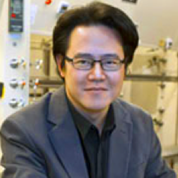

<div class="container">
    <div class="row">
        <div id="speaker-detail" class="col-lg-6 col-lg-offset-3">
            <div class="row">
                <button title="Close (Esc)" type="button" class="mfp-close">×</button>
                <div class="col-md-4 col-lg-4">
                    
                    <br />
                </div>
                <div class="col-md-8 col-lg-8">
                    <h2>Chia-Kuang Frank Tsung <br> 宗家洸博士</h2>
                    <h3>Assistant Professor, Chemistry, Boston College</h3>
                    <p>Prof. Tsung received his B.A. degree in chemistry from the National Sun Yat-Sen University, Taiwan in 1999. After two-year mandatory military service, he began his Ph.D. study with Professor Galen D. Stucky at the University of California, Santa Barbara in 2002 and received his Ph.D. in 2007. In October 2007, he started his joint postdoctoral research in Prof. Peidong Yang’s and Prof. Gabor A. Somorjai’s groups at the University of California at Berkeley. He joined the chemistry faculty at Boston College in the summer of 2010. His research focuses on heterogeneous catalysis, which is critical for the prosperity of human civilization. It provides access to the range of chemicals, materials, and fuels we use. Tsung’s group studies new approaches to enable the molecular-level design of active sites in heterogeneous catalysts. These precise active sites allow fundamentally tuning of molecule sorption behaviors, reaction pathways, and the corresponding rates. Achieving this goal will have a significant impact on the field of heterogeneous catalysis, as well as on the society as a whole.
                    </p>
                </div>
            </div>
        </div>
    </div>
</div>